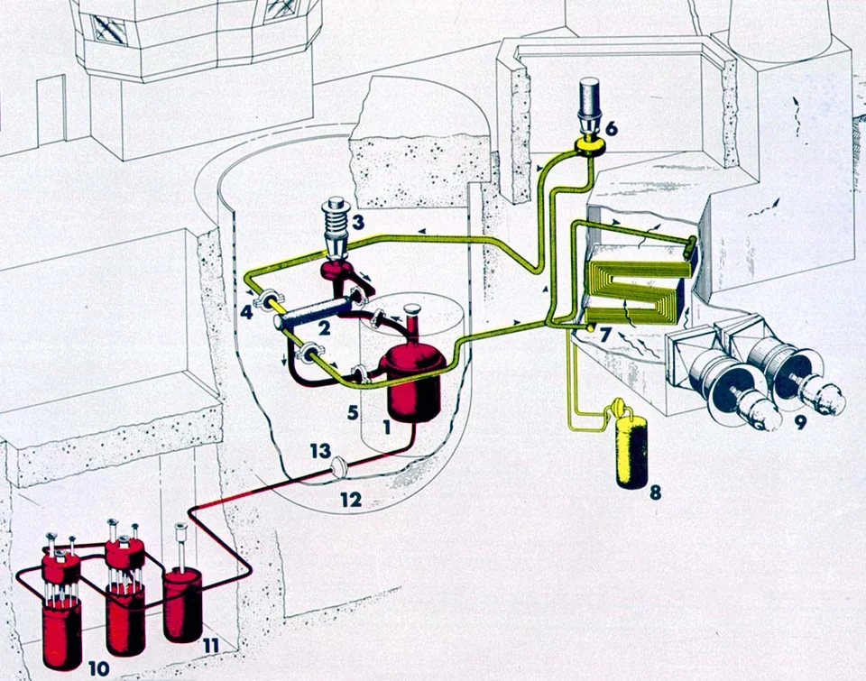
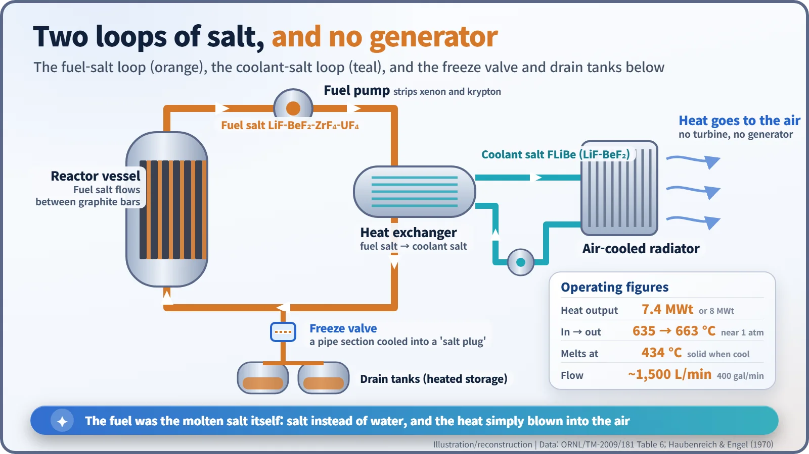
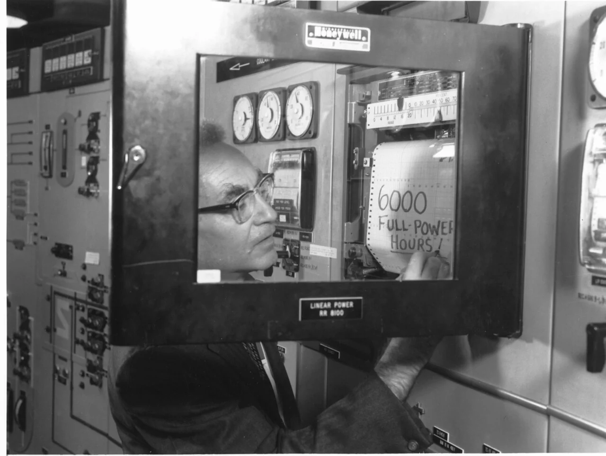
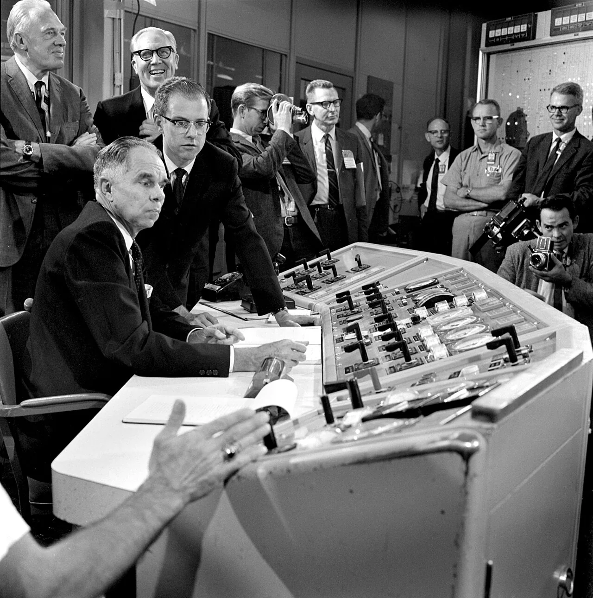
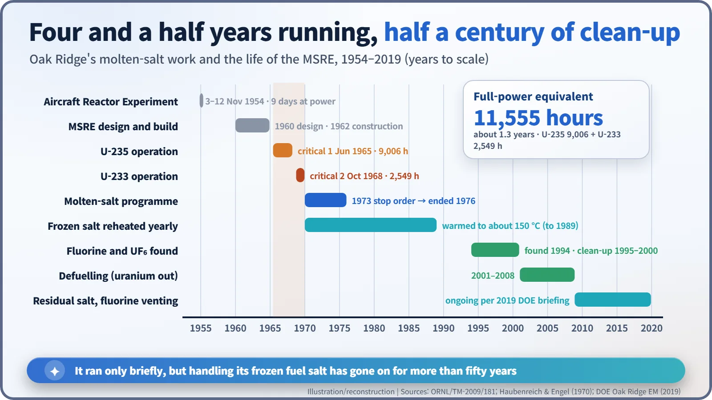

Nuclear History · 210
Waking a Reactor 88 Grams at a Time — Oak Ridge's Molten-Salt Reactor Experiment (MSRE, 1965–1969)
A liquid-fuelled reactor with no generator ran for 11,555 full-power hours and became the starting point of every molten-salt debate.
The Molten-Salt Reactor Experiment (MSRE) at Oak Ridge National Laboratory ran from 1965 to 1969 with a fuel that was itself a liquid: uranium dissolved in a molten fluoride salt. It had no generator, became the first reactor ever to operate on uranium-233, and logged 11,555 equivalent full-power hours. Its frozen fuel salt has needed careful handling for more than half a century since.
Fuelled by the spoonful
Early summer 1965, Oak Ridge National Laboratory (ORNL) in Tennessee. A small capsule on the end of a cable is lowered down a thin tube above a reactor. Inside it is a plug of frozen salt, rich in dissolved uranium. When the capsule dips into the hot salt below, its contents melt and mix in. Each addition: 88 grams. Instead of swapping fuel rods, this reactor was fuelled the way a cook seasons a soup, a spoonful at a time. It was the Molten-Salt Reactor Experiment, or MSRE. [1]

It started with a bomber
Oak Ridge came to molten salt by way of an aeroplane. In the 1950s the US Air Force wanted a nuclear-powered bomber, which needed a light, very hot reactor. On 3 November 1954 the Aircraft Reactor Experiment (ARE), which circulated uranium dissolved in a molten fluoride salt, went critical. It ran at power for nine days and was shut down on schedule on 12 November. The bomber programme was cancelled in March 1961, but a lesson remained: molten salt could carry nuclear fuel. [1]
ORNL's director, Alvin M. Weinberg (1915–2006), wanted to turn that idea into a power reactor. At the end of 1959 the laboratory proposed a small experimental reactor to test the technology. Design began in 1960, construction in early 1962, and the plant was finished in 1964. [1]
Salt where the water should be
Most reactors use solid fuel rods cooled by water. In the MSRE the fuel itself was a liquid: a fluoride salt of lithium (lithium-7), beryllium, zirconium and uranium, in molar proportions of 65 : 29.1 : 5 : 0.9. It flowed through channels between bars of graphite, which slowed the neutrons down so they could keep the chain reaction going. The salt melts at 434 °C. It entered the core at 635 °C and left at 663 °C, far hotter than the water in a power reactor, yet the system ran close to atmospheric pressure, with no need for a thick high-pressure vessel. [1] [5]
The hot fuel salt passed through a pump and then a heat exchanger, where it handed its heat to a second salt, FLiBe (lithium and beryllium fluorides). Then comes the twist: that heat was never turned into electricity. Fans blew air across a radiator and sent it into the Tennessee sky. There was no turbine and no generator. The point was not power but proof that a liquid-fuelled reactor could run steadily for a long time.

Beneath the reactor sat heated drain tanks. Between them, a flattened section of pipe could be cooled by air until the salt inside froze solid, forming a plug: a "freeze valve", opened and closed by temperature instead of a handle. ORNL's own summary gives the heat output as 7.4 megawatts thermal (MWt); some sources, including the operators' 1970 paper, give 8 MWt. [1] [2]
From a few grams of oil to the first U-233 reactor
The MSRE first went critical on 1 June 1965, on uranium enriched to about 33% uranium-235. The start was bumpy. When the power was raised in early 1966, small passages in the off-gas system clogged within hours. The culprit was a few grams of oil that had leaked past a pump gasket and been baked by heat and radiation; tracking it down and fixing it took three months. The blades of one of the radiator's main blowers also broke up. Even so, from mid-December 1966 the reactor ran for 30 days at full power without a break, and later managed a six-month run. [1]

The uranium-235 phase ended in March 1968, after about 9,000 equivalent full-power hours. Bubbling fluorine through the fuel salt turned the uranium into a gas, uranium hexafluoride (UF6), and pulled it out; the job took 47 hours. Then, on 2 October 1968, the reactor went critical again on uranium-233 made in another reactor. The MSRE became the first reactor ever to run on U-233. Glenn T. Seaborg (1912–1999), chairman of the Atomic Energy Commission (AEC), had led the team that first made U-233, so he was invited to Oak Ridge for the start-up ceremony and sat at the controls. Late in its life the reactor was also given a small amount of plutonium, to show that molten salt was not fussy about its fuel. [1] [2]

One common myth needs correcting. The MSRE is sometimes described as "the reactor that made electricity from thorium". It contained no thorium, it had no generator, and the U-233 it burned was not bred in it. [5]
A short run, a long clean-up
The MSRE shut down in December 1969. There was no accident: the budget was tight, and the money was moved to developing the fuel-processing system a molten-salt breeder would need. Its record is usually given as 11,555 equivalent full-power hours (9,006 on U-235 and 2,549 on U-233). In their 1970 paper, Paul Haubenreich and J. R. Engel reported that the salt was practical to handle, corrosion was minimal and the nuclear behaviour matched predictions closely. Weinberg later wrote, in a line quoted by ORNL: "Here we had a high-temperature fluid-fuel reactor that operated reliably." [1] [2] [3]
There was homework, too. The fission product tellurium had left fine cracks on the surfaces of the nickel alloy, and tritium formed from lithium had seeped through the heat-exchanger tubes. Meanwhile the AEC was concentrating on sodium-cooled fast breeders. In 1973 it ordered the molten-salt programme shut down; after a short low-budget extension, Oak Ridge's molten-salt work ended in 1976. [1] [5]

The story did not end there. Sitting frozen in the drain tanks, the fuel salt was slowly broken down by its own radiation and gave off fluorine gas. In 1994, high concentrations of fluorine and UF6 were confirmed in the off-gas system. Uranium was removed between 2001 and 2008, but according to a 2019 Department of Energy briefing, residual salt still sits frozen in the tanks, and the fluorine it keeps producing has to be pumped out regularly. [4]
A reactor that ran for barely four and a half years is now the starting point whenever molten-salt reactors are discussed. Tidying up after it has taken more than half a century. That is the MSRE's other lesson: a reactor's report card should include the clean-up as well as the operating record.